01 · Generative AI · RAG
Intelligent RAG Chatbot
Ingests PDFs, CSVs and live web pages, indexes embeddings in Pinecone and answers with a Groq-hosted LLM through LangChain — streaming chat, session analytics and source-grounded answers.
>
I build grounded AI systems — retrieval pipelines that cite their sources, vision models evaluated on the metrics that matter, and deployments real users can touch.
01 / About
I'm Tejas Kumar S, an AI/ML engineer in Bengaluru. I'm an AI Engineer Intern at Datamites, where I designed and deployed a RAG-based document search and Q&A system with LangChain, Pinecone and FAISS.
I work end to end — preprocessing, feature engineering, training, honest evaluation (precision, recall, F1, ROC-AUC, false-negative rate) and deployment with FastAPI, Streamlit and Docker. Right now I'm going deeper into LangGraph multi-agent systems, MCP and detection metrics like IoU, NMS and mAP.
02 / Skills
03 / Ask AI
A tiny retrieval engine running in your browser: your question and 13 facts about me are turned into TF-IDF vectors, ranked by cosine similarity, and laid out in 2D by cosine distance (MDS). No LLM, no server — just the retrieval half of RAG, made visible.
Pick a question or type your own.
04 / Projects

01 · Generative AI · RAG
Ingests PDFs, CSVs and live web pages, indexes embeddings in Pinecone and answers with a Groq-hosted LLM through LangChain — streaming chat, session analytics and source-grounded answers.
02 · Computer Vision · Healthcare
Transfer learning across MobileNetV2, EfficientNet-B0 and ResNet50. Diagnosed and fixed majority-class collapse by optimising recall, F1 and false-negative rate — a missed diagnosis costs the most.
03 · RAG · Healthcare
An AI medical assistant that answers health questions grounded in trusted medical documents — FAISS vector search with Hugging Face embeddings and an LLM via LangChain, cutting hallucinated answers.
04 · AIOps · Microservices
Root-cause analysis platform that detects service failures, correlates logs, metrics and traces, and recommends remediation — containerised FastAPI microservices on Docker Compose.
05 · Deep Learning · Deploy
A reusable model factory (MobileNetV2 / EfficientNet-B0 / ResNet50) with corrupted-file handling, an error-analysis visualiser, a Streamlit app and a Docker Hub image.
06 · Computer Vision
Detection & localisation with Ultralytics YOLO11n — bounding boxes, class IDs and confidence scores rendered with OpenCV. Now extending it with IoU, NMS and mAP evaluation.


05 / Journey
Graduated with CGPA 8.3.
Two-month internship during engineering.
73%
CGPA 8.8
06 / Contact